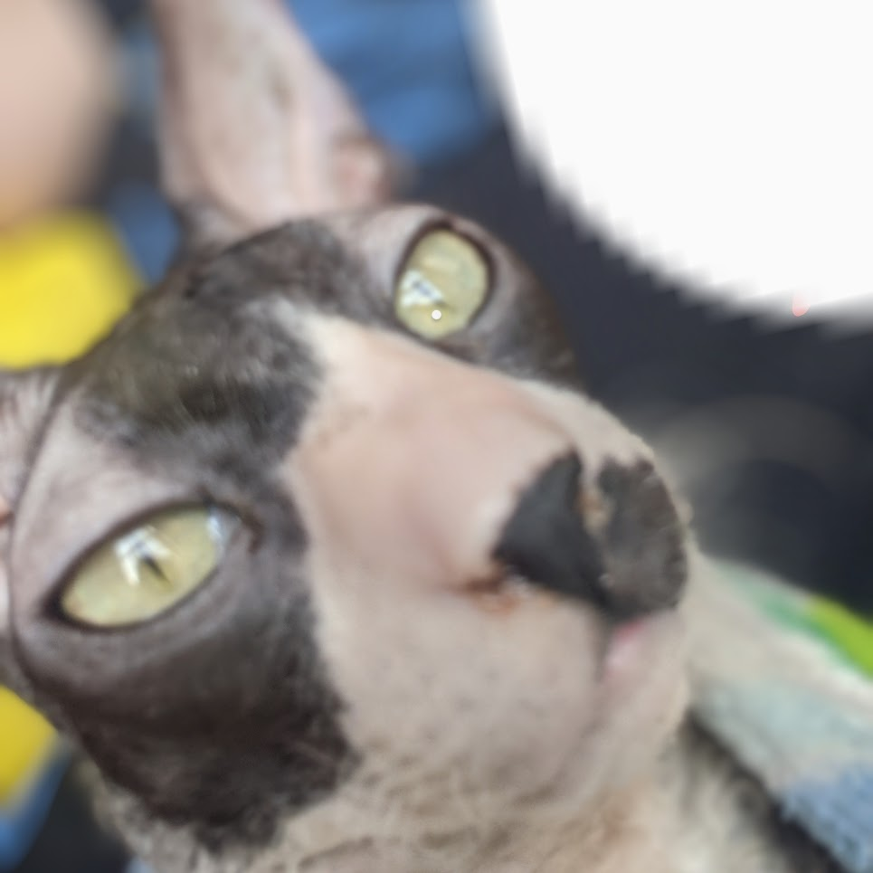

About SirMac
SirMac is a playful and energetic Cornish Rex cat. He loves cuddling, climbing, and exploring new places. He has a soft wavy coat, and a friendly personality.
Cornish Rex Breed
The Cornish Rex breed originated in the Cornwall region in the 1950s, and is known for its unique wavy coat and slim, muscular build. They are generally healthy and have a longer lifespan compared to other breeds. Cornish Rex cats are energetic, loving, and playful, making them great companions for families. [Source 4](https://www.mymoggy.com/devon-rex-or-cornish-rex/)